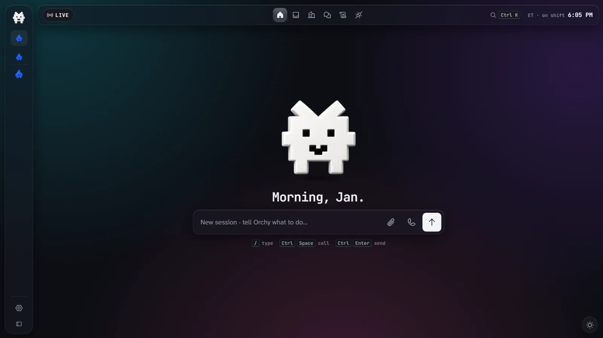

Orchy
An AI agent orchestrator for running several businesses from one place, each kept apart.
- ProblemRunning AI agents for more than one business risks mixed-up accounts and work going out unchecked.
- What it doesRoutes a plain-language instruction to the right business, agent and model, runs it under that business's own account, and pauses before anything is sent, spent, shared or deleted.
- ResultEach business stays separate and runs under its own account.
